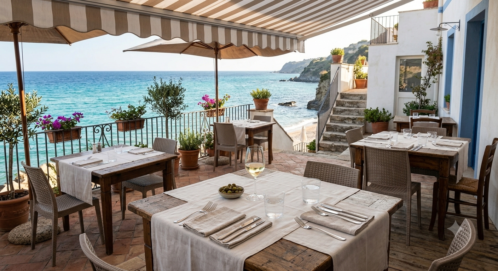
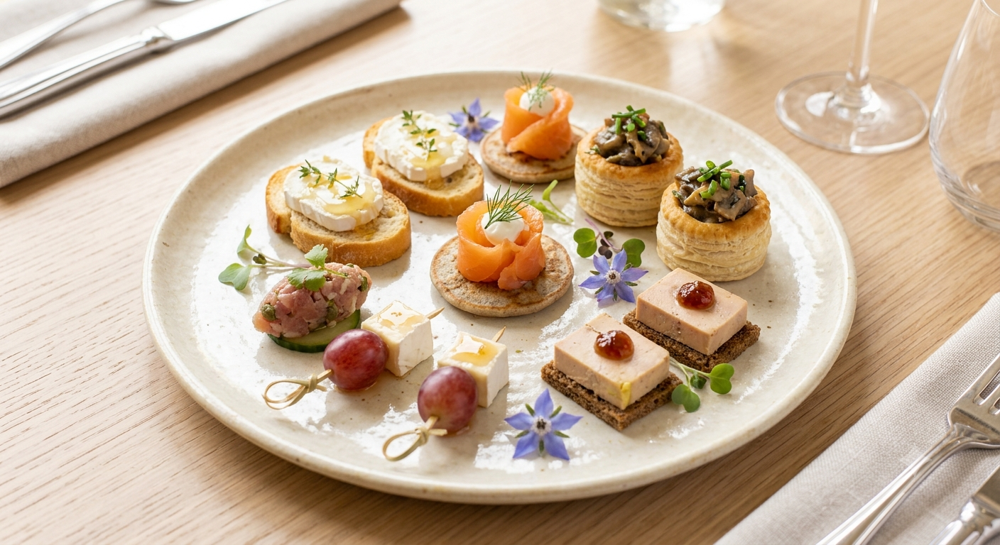
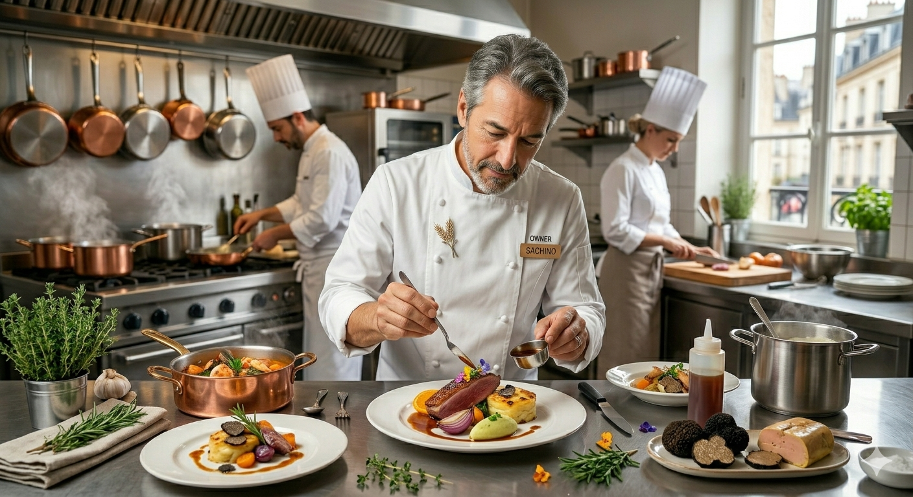
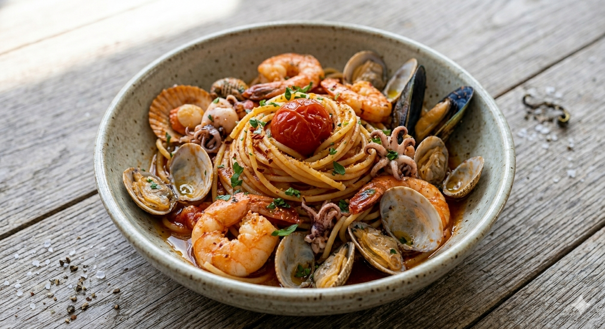
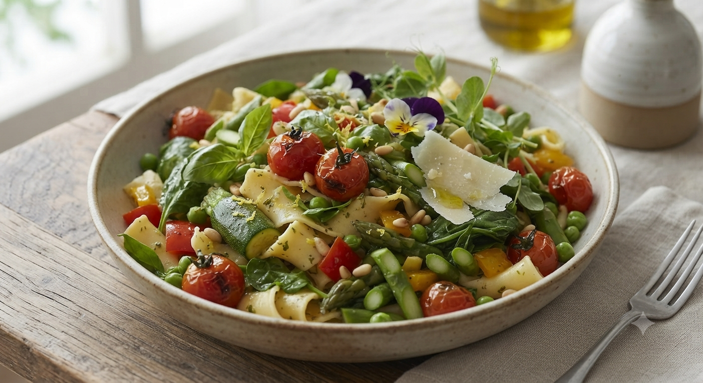
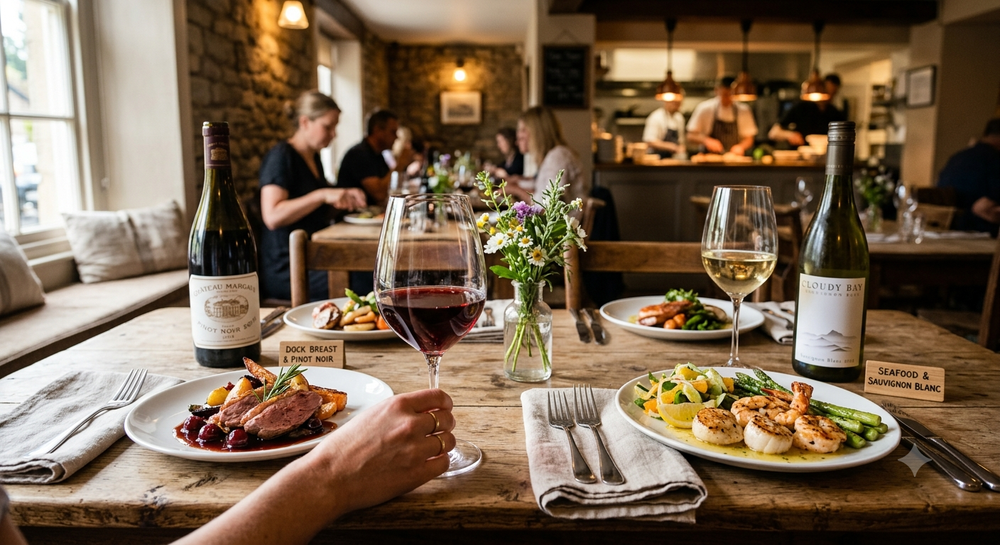

食材王国みやぎの港と食卓、その「真髄」へ

イチオシ：アンティパストミスト
ホテル30年の技が引き出す、
素材本来の「叫び」を聴いてください。
Reservations
022-208-2538
ホテル料理長
30年
確かな伝統と技
提携生産者数
20人以上
直接取引の絆
口コミ平均
4.8
圧倒的な満足度
席数
20席
少人数限定の質

Owner Chef
瀬戸 正彦 Masahiko Seto
震災のあと、私が目にしたのは
宮城が誇る豊かな食材と、
それを守ろうとする生産者たちの力強い姿でした。
「食材王国みやぎ伝え人」として活動する中で、ホテルという大きな組織ではできなかった「小規模だからこそできる生産者や漁師さんとの直接取引」にこだわりました。鮮度を損なわないよう仕込みは最小限に。
「ソースで着飾らない、素顔のイタリアン」

お客様の生の声が、その答えです
「食材を大切に調理しているのが分かる」
「地産地消。宮城にはこんなに美味しいものがあるのだと気づかされました。本来の味を旨味やソースで隠さない絶妙なテクニック！お腹も心もいっぱいです。」
「メニューは多彩で、常に新しい発見」
「旬の食材が多彩な形で美しく皿に盛られていて、彩りも綺麗。一つ一つがどんな味なのか興味をそそられる。シェフも気さくで楽しい時間を過ごせました。」
イチオシ：アンティパストミスト


松島湾の牡蠣、朝採れの野菜など、素材の鮮度を最優先。20名以上の生産者から直接届きます。
最小限の仕込みで、その瞬間の「最高」を逃しません。素材の旨みを最大限に引き出すシンプル調理。
ソムリエ厳選のナチュラルワインとの極上ペアリング。宮城生ワインとのマリアージュも好評です。
PORTTAVOLAが紡ぐ、これからの「食卓」のカタチ
お店の看板メニューである「アンティパストミスト(前菜盛り合わせ)」をご家庭向けに特別アレンジ。美しく盛り付けるためのオリジナル木箱BOXと、シェフ瀬戸による食材カードを添えて。ご自宅が一瞬で「宮城の贅沢な港」に変貌します。
閑静な高級住宅街に佇む、大人の隠れ家
仙台市泉区紫山の落ち着いた街並みに位置しています。お車でのご来店も安心いただけるよう、専用駐車場をご用意しております。
仙台市泉区紫山2丁目32-10
022-208-2538
あなたの大切な人と、
この贅沢な食卓を囲んでいただけますように。
PORTTAVOLA
〒981-3205 宮城県仙台市泉区紫山2丁目32-10
駐車場完備 / 全席禁煙 / PayPay可
営業時間
完全予約制（火曜定休）
Tel: 022-208-2538
※食材の仕入れ状況によりメニューが毎日変わります